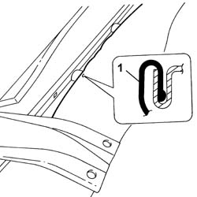
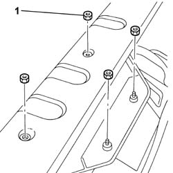

7050B18 REAR SEAT ARM REST - R+R
- Path
- Procedures > 70 FITTINGS > 7050 REAR SEATS > 7050B REAR SEAT HEAD RESTRAINT/ARM REST > 7050B18 REAR SEAT ARM REST - R+R
- Kind
- repair procedure (removal / refitting; the operation number is the code)
- Applies to
- all engines; all production periods
- Interactive page
- https://sloeber94.github.io/elrnDB-lThss/en/#/80670
Applies to: all engines; all production periods
 Removing
Removing
 Refitting
RefittingDisconnect the negative battery terminal.
Op. 7050A20 ONE-PIECE REAR SEAT CUSHION - R R
Op. 7050A19 REAR SEAT SQUAB - R R
1. Release the cover along the backrest perimeter, in the lower middle area.

Applies to: all engines; all production periods
1. Undo the nuts underneath and remove the armrest.

Applies to: all engines; all production periods
Disconnect the electrical connection for the armrest with the backrest wiring.
Description | Connector | |
|---|---|---|
- | Rear armrest backrest coupling | D132 |
Applies to: all engines; all production periods
Refitting
RemovingConnect the electrical connection for the armrest with the backrest wiring.
Description | Connector | |
|---|---|---|
- | Rear armrest backrest coupling | D132 |
Applies to: all engines; all production periods
Fit the armrest in the housing and secure it using the nuts.
Fit the cover surround along the perimeter.
Op. 7050A19 REAR SEAT SQUAB - R R
Op. 7050A20 ONE-PIECE REAR SEAT CUSHION - R R
Connect the negative battery terminal.